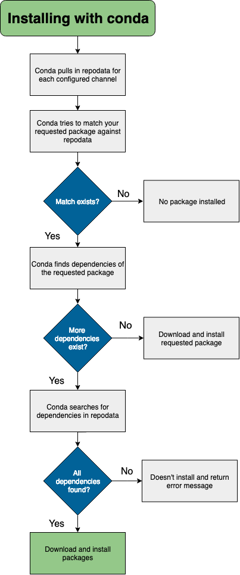

Conda로 설치하기¶
conda 패키지를 설치하기 위해 터미널 혹은 Anaconda Prompt에서 아래 행을 실행하십시오:
conda install [packagename]
설치 프로세스가 진행하는 동안, 지정한 환경으로 파일이 추출되며, 지정한 환경이 없을 경우 현재 환경이 기본값으로 설정됩니다.conda 패키지 파일을 환경에 설치하는 것은 환경의 디렉토리를 변경한 다음, 그 파일과모든 의존성(dependencies)들을 다운로드하여 단일 명령으로 추출 conda install [packagename]하는 것으로 생각할 수 있습니다.
Conda 환경(environments)을 참조해 보십시오.
- 채널에 존재하고 종속성이 없는 패키지를
conda install할때:- 구성된 채널들을 (우선순위대로) 살펴봅니다
- 채널/플랫폼과 관련된 repodata에 도달합니다
- 패키지 검색을 위해 repodata를 파싱합니다
- 패키지가 발견되면, conda는 그것을 다운로드 하고 설치합니다